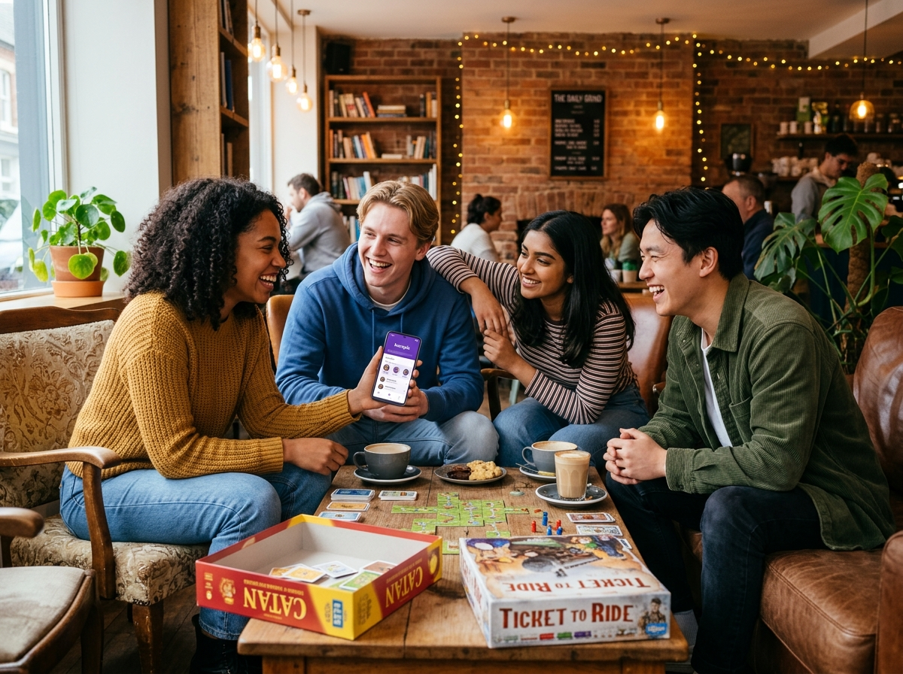

Para jóvenes de 18-27 años. Comunidades basadas en intereses, hobbies y experiencias compartidas. Progresivo y seguro.

Sé de los primeros en probar la experiencia Kompis en tu ciudad.
Diseñado con empatía para superar la ansiedad social y encontrar afinidad real.
Encuentra tu grupo ideal basado en tus pasiones. Olvídate de conversaciones superficiales y conecta directo con lo que te apasiona.
Observa, participa y conecta a tu propio ritmo. Únete a chats temáticos antes de asistir a reuniones en vivo sin ninguna presión.
Actividades presenciales verificadas con gente afín. Lugares públicos amigables, anfitriones moderadores y grupos reducidos.
Construye conexiones auténticas y duraderas. Diseñado para crear vínculos genuinos entre estudiantes y jóvenes en nuevas ciudades.
Paso a paso diseñado para acompañarte sin presiones desde el primer clic hasta tu primer café.
Selecciona tus hobbies reales en lugar de crear un perfil enfocado en apariencias.
Entra a salas de chat temáticas y observa el ambiente antes de decidir reunirte.
Reuniones de máximo 4 a 6 personas en lugares amigables y tranquilos.
Construye amistades naturales, sin expectativas citas románticas ni compromisos.
Explora algunos de los grupos que ya están organizando encuentros esta semana.
Cafetería Coyoacán • Sábado 4:00 PM
Espresso Bar Centro • Viernes 6:00 PM
Lounge Gaming Hub • Domingo 3:00 PM
Librería & Té Gandhi • Sábado 11:00 AM
Historias reales de personas que encontraron su círculo auténtico sin lidiar con la ansiedad social.
"Me mudé a la ciudad por la universidad y no conocía a nadie. En Kompis me uní a un grupo pequeño de juegos de mesa. No había presión de causar una 'gran impresión' y fue súper natural."
"Como persona introvertida, las apps tradicionales me abrumaban. Poder ver el chat en 'Modo Espectador' antes de ir a mi primer café de libros me dio la confianza que necesitaba."
"Los grupos reducidos de máximo 6 personas cambian todo. Puedes hablar sin interrumpirte y todos los lugares son cafeterías súper tranquilas con anfitriones atentos."
Todo lo que necesitas saber antes de dar tu primer paso.
Todas nuestras actividades presenciales son en grupos muy pequeños (4 a 6 personas) en lugares tranquilos. Además, cada grupo cuenta con un anfitrión Kompis capacitado que propone dinámicas suaves para romper el hielo.
Kompis está diseñado exclusivamente para jóvenes de 18 a 27 años. Verificamos la identidad de cada miembro para mantener un ambiente seguro, afín y auténtico.
Es una función que te permite unirte al chat grupal de un evento para ver cómo interactúan los miembros antes de confirmar tu presencia presencial. Si sientes que no es el grupo indicado, puedes salirte en cualquier momento sin explicaciones.
El registro y el acceso a comunidades públicas es 100% gratuito durante la fase de lanzamiento beta. En los encuentros en cafeterías o espacios públicos, cada asistente cubre únicamente su consumo personal.
Bienvenido a la comunidad Kompis. Te enviaremos tu acceso exclusivo.